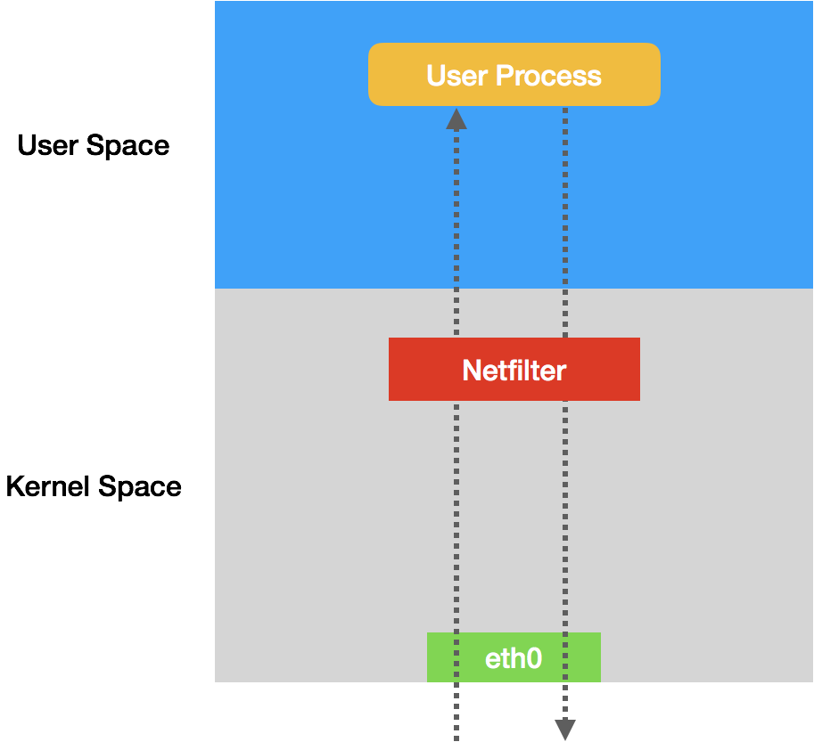
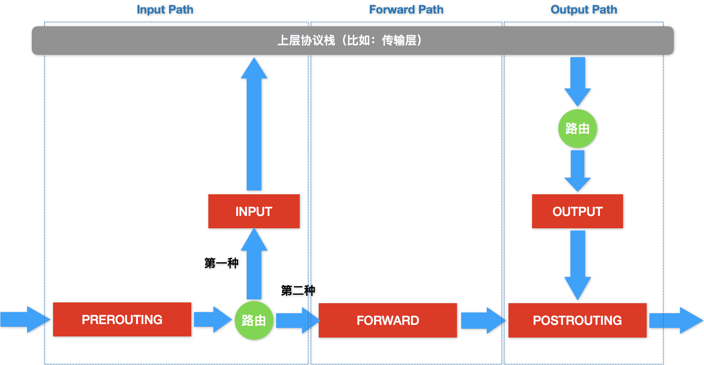
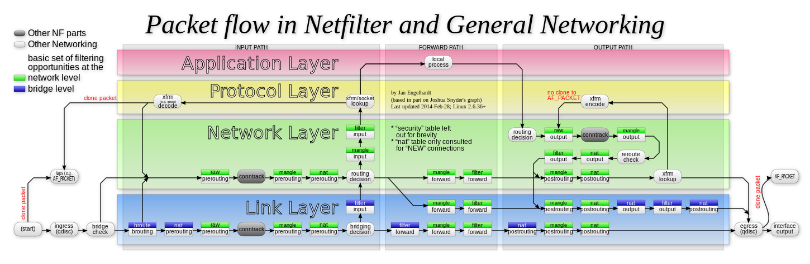

- 00 开篇词 打通“容器技术”的任督二脉.md.html
- 01 预习篇 · 小鲸鱼大事记（一）：初出茅庐.md.html
- 02 预习篇 · 小鲸鱼大事记（二）：崭露头角.md.html
- 03 预习篇 · 小鲸鱼大事记（三）：群雄并起.md.html
- 04 预习篇 · 小鲸鱼大事记（四）：尘埃落定.md.html
- 05 白话容器基础（一）：从进程说开去.md.html
- 06 白话容器基础（二）：隔离与限制.md.html
- 07 白话容器基础（三）：深入理解容器镜像.md.html
- 08 白话容器基础（四）：重新认识Docker容器.md.html
- 09 从容器到容器云：谈谈Kubernetes的本质.md.html
- 10 Kubernetes一键部署利器：kubeadm.md.html
- 11 从0到1：搭建一个完整的Kubernetes集群.md.html
- 12 牛刀小试：我的第一个容器化应用.md.html
- 13 为什么我们需要Pod？.md.html
- 14 深入解析Pod对象（一）：基本概念.md.html
- 15 深入解析Pod对象（二）：使用进阶.md.html
- 16 编排其实很简单：谈谈“控制器”模型.md.html
- 17 经典PaaS的记忆：作业副本与水平扩展.md.html
- 18 深入理解StatefulSet（一）：拓扑状态.md.html
- 19 深入理解StatefulSet（二）：存储状态.md.html
- 20 深入理解StatefulSet（三）：有状态应用实践.md.html
- 21 容器化守护进程的意义：DaemonSet.md.html
- 22 撬动离线业务：Job与CronJob.md.html
- 23 声明式API与Kubernetes编程范式.md.html
- 24 深入解析声明式API（一）：API对象的奥秘.md.html
- 25 深入解析声明式API（二）：编写自定义控制器.md.html
- 26 基于角色的权限控制：RBAC.md.html
- 27 聪明的微创新：Operator工作原理解读.md.html
- 28 PV、PVC、StorageClass，这些到底在说啥？.md.html
- 29 PV、PVC体系是不是多此一举？从本地持久化卷谈起.md.html
- 30 编写自己的存储插件：FlexVolume与CSI.md.html
- 31 容器存储实践：CSI插件编写指南.md.html
- 32 浅谈容器网络.md.html
- 33 深入解析容器跨主机网络.md.html
- 34 Kubernetes网络模型与CNI网络插件.md.html
- 35 解读Kubernetes三层网络方案.md.html
- 36 为什么说Kubernetes只有soft multi-tenancy？.md.html
- 37 找到容器不容易：Service、DNS与服务发现.md.html
- 38 从外界连通Service与Service调试“三板斧”.md.html
- 39 谈谈Service与Ingress.md.html
- 40 Kubernetes的资源模型与资源管理.md.html
- 41 十字路口上的Kubernetes默认调度器.md.html
- 42 Kubernetes默认调度器调度策略解析.md.html
- 43 Kubernetes默认调度器的优先级与抢占机制.md.html
- 44 Kubernetes GPU管理与Device Plugin机制.md.html
- 45 幕后英雄：SIG-Node与CRI.md.html
- 46 解读 CRI 与 容器运行时.md.html
- 47 绝不仅仅是安全：Kata Containers 与 gVisor.md.html
- 48 Prometheus、Metrics Server与Kubernetes监控体系.md.html
- 49 Custom Metrics_ 让Auto Scaling不再“食之无味”.md.html
- 50 让日志无处可逃：容器日志收集与管理.md.html
- 51 谈谈Kubernetes开源社区和未来走向.md.html
- 52 答疑：在问题中解决问题，在思考中产生思考.md.html
- 特别放送 2019 年，容器技术生态会发生些什么？.md.html
- 特别放送 基于 Kubernetes 的云原生应用管理，到底应该怎么做？.md.html
- 结束语 Kubernetes：赢开发者赢天下.md.html
- 捐赠
36 为什么说Kubernetes只有soft multi-tenancy？
你好，我是张磊。今天我和你分享的主题是：为什么说Kubernetes只有soft multi-tenancy？
在前面的文章中，我为你详细讲解了Kubernetes生态里，主流容器网络方案的工作原理。
不难发现，Kubernetes的网络模型，以及前面这些网络方案的实现，都只关注容器之间网络的“连通”，却并不关心容器之间网络的“隔离”。这跟传统的IaaS层的网络方案，区别非常明显。
你肯定会问了，Kubernetes的网络方案对“隔离”到底是如何考虑的呢？难道Kubernetes就不管网络“多租户”的需求吗？
接下来，在今天这篇文章中，我就来回答你的这些问题。
在Kubernetes里，网络隔离能力的定义，是依靠一种专门的API对象来描述的，即：NetworkPolicy。
一个完整的NetworkPolicy对象的示例，如下所示：
apiVersion: networking.k8s.io/v1
kind: NetworkPolicy
metadata:
name: test-network-policy
namespace: default
spec:
podSelector:
matchLabels:
role: db
policyTypes:
- Ingress
- Egress
ingress:
- from:
- ipBlock:
cidr: 172.17.0.0/16
except:
- 172.17.1.0/24
- namespaceSelector:
matchLabels:
project: myproject
- podSelector:
matchLabels:
role: frontend
ports:
- protocol: TCP
port: 6379
egress:
- to:
- ipBlock:
cidr: 10.0.0.0/24
ports:
- protocol: TCP
port: 5978
我在和你分享前面的内容时已经说过（这里你可以再回顾下第34篇文章《Kubernetes 网络模型与 CNI 网络插件》中的相关内容），Kubernetes里的Pod默认都是“允许所有”（Accept All）的，即：Pod可以接收来自任何发送方的请求；或者，向任何接收方发送请求。而如果你要对这个情况作出限制，就必须通过NetworkPolicy对象来指定。
而在上面这个例子里，你首先会看到podSelector字段。它的作用，就是定义这个NetworkPolicy的限制范围，比如：当前Namespace里携带了role=db标签的Pod。
而如果你把podSelector字段留空：
spec:
podSelector: {}
那么这个NetworkPolicy就会作用于当前Namespace下的所有Pod。
而一旦Pod被NetworkPolicy选中，那么这个Pod就会进入“拒绝所有”（Deny All）的状态，即：这个Pod既不允许被外界访问，也不允许对外界发起访问。
而NetworkPolicy定义的规则，其实就是“白名单”。
例如，在我们上面这个例子里，我在policyTypes字段，定义了这个NetworkPolicy的类型是ingress和egress，即：它既会影响流入（ingress）请求，也会影响流出（egress）请求。
然后，在ingress字段里，我定义了from和ports，即：允许流入的“白名单”和端口。其中，这个允许流入的“白名单”里，我指定了三种并列的情况，分别是：ipBlock、namespaceSelector和podSelector。
而在egress字段里，我则定义了to和ports，即：允许流出的“白名单”和端口。这里允许流出的“白名单”的定义方法与ingress类似。只不过，这一次ipblock字段指定的，是目的地址的网段。
综上所述，这个NetworkPolicy对象，指定的隔离规则如下所示：
- 该隔离规则只对default Namespace下的，携带了role=db标签的Pod有效。限制的请求类型包括ingress（流入）和egress（流出）。
- Kubernetes会拒绝任何访问被隔离Pod的请求，除非这个请求来自于以下“白名单”里的对象，并且访问的是被隔离Pod的6379端口。这些“白名单”对象包括：- a. default Namespace里的，携带了role=fronted标签的Pod；- b. 携带了project=myproject 标签的 Namespace 里的任何 Pod；- c. 任何源地址属于172.17.0.0/16网段，且不属于172.17.1.0/24网段的请求。
- Kubernetes会拒绝被隔离Pod对外发起任何请求，除非请求的目的地址属于10.0.0.0/24网段，并且访问的是该网段地址的5978端口。
需要注意的是，定义一个NetworkPolicy对象的过程，容易犯错的是“白名单”部分（from和to字段）。
举个例子：
...
ingress:
- from:
- namespaceSelector:
matchLabels:
user: alice
- podSelector:
matchLabels:
role: client
...
像上面这样定义的namespaceSelector和podSelector，是“或”（OR）的关系。所以说，这个from字段定义了两种情况，无论是Namespace满足条件，还是Pod满足条件，这个NetworkPolicy都会生效。
而下面这个例子，虽然看起来类似，但是它定义的规则却完全不同：
...
ingress:
- from:
- namespaceSelector:
matchLabels:
user: alice
podSelector:
matchLabels:
role: client
...
注意看，这样定义的namespaceSelector和podSelector，其实是“与”（AND）的关系。所以说，这个from字段只定义了一种情况，只有Namespace和Pod同时满足条件，这个NetworkPolicy才会生效。
这两种定义方式的区别，请你一定要分清楚。
此外，如果要使上面定义的NetworkPolicy在Kubernetes集群里真正产生作用，你的CNI网络插件就必须是支持Kubernetes的NetworkPolicy的。
在具体实现上，凡是支持NetworkPolicy的CNI网络插件，都维护着一个NetworkPolicy Controller，通过控制循环的方式对NetworkPolicy对象的增删改查做出响应，然后在宿主机上完成iptables规则的配置工作。
在Kubernetes生态里，目前已经实现了NetworkPolicy的网络插件包括Calico、Weave和kube-router等多个项目，但是并不包括Flannel项目。
所以说，如果想要在使用Flannel的同时还使用NetworkPolicy的话，你就需要再额外安装一个网络插件，比如Calico项目，来负责执行NetworkPolicy。
安装Flannel + Calico的流程非常简单，你直接参考这个文档一键安装即可。
那么，这些网络插件，又是如何根据NetworkPolicy对Pod进行隔离的呢？
接下来，我就以三层网络插件为例（比如Calico和kube-router），来为你分析一下这部分的原理。
为了方便讲解，这一次我编写了一个比较简单的NetworkPolicy对象，如下所示：
apiVersion: extensions/v1beta1
kind: NetworkPolicy
metadata:
name: test-network-policy
namespace: default
spec:
podSelector:
matchLabels:
role: db
ingress:
- from:
- namespaceSelector:
matchLabels:
project: myproject
- podSelector:
matchLabels:
role: frontend
ports:
- protocol: tcp
port: 6379
可以看到，我们指定的ingress“白名单”，是任何Namespace里，携带project=myproject标签的Namespace里的Pod；以及default Namespace里，携带了role=frontend标签的Pod。允许被访问的端口是：6379。
而被隔离的对象，是所有携带了role=db标签的Pod。
那么这个时候，Kubernetes的网络插件就会使用这个NetworkPolicy的定义，在宿主机上生成iptables规则。这个过程，我可以通过如下所示的一段Go语言风格的伪代码来为你描述：
for dstIP := range 所有被networkpolicy.spec.podSelector选中的Pod的IP地址
for srcIP := range 所有被ingress.from.podSelector选中的Pod的IP地址
for port, protocol := range ingress.ports {
iptables -A KUBE-NWPLCY-CHAIN -s $srcIP -d $dstIP -p $protocol -m $protocol --dport $port -j ACCEPT
}
}
}
可以看到，这是一条最基本的、通过匹配条件决定下一步动作的iptables规则。
这条规则的名字是KUBE-NWPLCY-CHAIN，含义是：当IP包的源地址是srcIP、目的地址是dstIP、协议是protocol、目的端口是port的时候，就允许它通过（ACCEPT）。
而正如这段伪代码所示，匹配这条规则所需的这四个参数，都是从NetworkPolicy对象里读取出来的。
可以看到，Kubernetes网络插件对Pod进行隔离，其实是靠在宿主机上生成NetworkPolicy对应的iptable规则来实现的。
此外，在设置好上述“隔离”规则之后，网络插件还需要想办法，将所有对被隔离Pod的访问请求，都转发到上述KUBE-NWPLCY-CHAIN规则上去进行匹配。并且，如果匹配不通过，这个请求应该被“拒绝”。
在CNI网络插件中，上述需求可以通过设置两组iptables规则来实现。
第一组规则，负责“拦截”对被隔离Pod的访问请求。生成这一组规则的伪代码，如下所示：
for pod := range 该Node上的所有Pod {
if pod是networkpolicy.spec.podSelector选中的 {
iptables -A FORWARD -d $podIP -m physdev --physdev-is-bridged -j KUBE-POD-SPECIFIC-FW-CHAIN
iptables -A FORWARD -d $podIP -j KUBE-POD-SPECIFIC-FW-CHAIN
...
}
}
可以看到，这里的的iptables规则使用到了内置链：FORWARD。它是什么意思呢？
说到这里，我就得为你稍微普及一下iptables的知识了。
实际上，iptables只是一个操作Linux内核Netfilter子系统的“界面”。顾名思义，Netfilter子系统的作用，就是Linux内核里挡在“网卡”和“用户态进程”之间的一道“防火墙”。它们的关系，可以用如下的示意图来表示：
- 可以看到，这幅示意图中，IP包“一进一出”的两条路径上，有几个关键的“检查点”，它们正是Netfilter设置“防火墙”的地方。在iptables中，这些“检查点”被称为：链（Chain）。这是因为这些“检查点”对应的iptables规则，是按照定义顺序依次进行匹配的。这些“检查点”的具体工作原理，可以用如下所示的示意图进行描述：

可以看到，当一个IP包通过网卡进入主机之后，它就进入了Netfilter定义的流入路径（Input Path）里。
在这个路径中，IP包要经过路由表路由来决定下一步的去向。而在这次路由之前，Netfilter设置了一个名叫PREROUTING的“检查点”。在Linux内核的实现里，所谓“检查点”实际上就是内核网络协议栈代码里的Hook（比如，在执行路由判断的代码之前，内核会先调用PREROUTING的Hook）。
而在经过路由之后，IP包的去向就分为了两种：
- 第一种，继续在本机处理；
- 第二种，被转发到其他目的地。
我们先说一下IP包的第一种去向。这时候，IP包将继续向上层协议栈流动。在它进入传输层之前，Netfilter会设置一个名叫INPUT的“检查点”。到这里，IP包流入路径（Input Path）结束。
接下来，这个IP包通过传输层进入用户空间，交给用户进程处理。而处理完成后，用户进程会通过本机发出返回的IP包。这时候，这个IP包就进入了流出路径（Output Path）。
此时，IP包首先还是会经过主机的路由表进行路由。路由结束后，Netfilter就会设置一个名叫OUTPUT的“检查点”。然后，在OUTPUT之后，再设置一个名叫POSTROUTING“检查点”。
你可能会觉得奇怪，为什么在流出路径结束后，Netfilter会连着设置两个“检查点”呢？
这就要说到在流入路径里，路由判断后的第二种去向了。
在这种情况下，这个IP包不会进入传输层，而是会继续在网络层流动，从而进入到转发路径（Forward Path）。在转发路径中，Netfilter会设置一个名叫FORWARD的“检查点”。
而在FORWARD“检查点”完成后，IP包就会来到流出路径。而转发的IP包由于目的地已经确定，它就不会再经过路由，也自然不会经过OUTPUT，而是会直接来到POSTROUTING“检查点”。
所以说，POSTROUTING的作用，其实就是上述两条路径，最终汇聚在一起的“最终检查点”。
需要注意的是，在有网桥参与的情况下，上述Netfilter设置“检查点”的流程，实际上也会出现在链路层（二层），并且会跟我在上面讲述的网络层（三层）的流程有交互。
这些链路层的“检查点”对应的操作界面叫作ebtables。所以，准确地说，数据包在Linux Netfilter子系统里完整的流动过程，其实应该如下所示（这是一幅来自Netfilter官方的原理图，建议你点击图片以查看大图）：

可以看到，我前面为你讲述的，正是上图中绿色部分，也就是网络层的iptables链的工作流程。
另外，你应该还能看到，每一个白色的“检查点”上，还有一个绿色的“标签”，比如：raw、nat、filter等等。
在iptables里，这些标签叫作：表。比如，同样是OUTPUT这个“检查点”，filter Output和nat Output在iptables里的语法和参数，就完全不一样，实现的功能也完全不同。
所以说，iptables表的作用，就是在某个具体的“检查点”（比如Output）上，按顺序执行几个不同的检查动作（比如，先执行nat，再执行filter）。
在理解了iptables的工作原理之后，我们再回到NetworkPolicy上来。这时候，前面由网络插件设置的、负责“拦截”进入Pod的请求的三条iptables规则，就很容易读懂了：
iptables -A FORWARD -d $podIP -m physdev --physdev-is-bridged -j KUBE-POD-SPECIFIC-FW-CHAIN
iptables -A FORWARD -d $podIP -j KUBE-POD-SPECIFIC-FW-CHAIN
...
其中，第一条FORWARD链“拦截”的是一种特殊情况：它对应的是同一台宿主机上容器之间经过CNI网桥进行通信的流入数据包。其中，–physdev-is-bridged的意思就是，这个FORWARD链匹配的是，通过本机上的网桥设备，发往目的地址是podIP的IP包。
当然，如果是像Calico这样的非网桥模式的CNI插件，就不存在这个情况了。
kube-router其实是一个简化版的Calico，它也使用BGP来维护路由信息，但是使用CNI bridge插件负责跟Kubernetes进行交互。
而第二条FORWARD链“拦截”的则是最普遍的情况，即：容器跨主通信。这时候，流入容器的数据包都是经过路由转发（FORWARD检查点）来的。
不难看到，这些规则最后都跳转（即：-j）到了名叫KUBE-POD-SPECIFIC-FW-CHAIN的规则上。它正是网络插件为NetworkPolicy设置的第二组规则。
而这个KUBE-POD-SPECIFIC-FW-CHAIN的作用，就是做出“允许”或者“拒绝”的判断。这部分功能的实现，可以简单描述为下面这样的iptables规则：
iptables -A KUBE-POD-SPECIFIC-FW-CHAIN -j KUBE-NWPLCY-CHAIN
iptables -A KUBE-POD-SPECIFIC-FW-CHAIN -j REJECT --reject-with icmp-port-unreachable
可以看到，首先在第一条规则里，我们会把IP包转交给前面定义的KUBE-NWPLCY-CHAIN规则去进行匹配。按照我们之前的讲述，如果匹配成功，那么IP包就会被“允许通过”。
而如果匹配失败，IP包就会来到第二条规则上。可以看到，它是一条REJECT规则。通过这条规则，不满足NetworkPolicy定义的请求就会被拒绝掉，从而实现了对该容器的“隔离”。
以上，就是CNI网络插件实现NetworkPolicy的基本方法了。当然，对于不同的插件来说，上述实现过程可能有不同的手段，但根本原理是不变的。
总结
在本篇文章中，我主要和你分享了Kubernetes对Pod进行“隔离”的手段，即：NetworkPolicy。
可以看到，NetworkPolicy实际上只是宿主机上的一系列iptables规则。这跟传统IaaS里面的安全组（Security Group）其实是非常类似的。
而基于上述讲述，你就会发现这样一个事实：
Kubernetes的网络模型以及大多数容器网络实现，其实既不会保证容器之间二层网络的互通，也不会实现容器之间的二层网络隔离。这跟IaaS项目管理虚拟机的方式，是完全不同的。
所以说，Kubernetes从底层的设计和实现上，更倾向于假设你已经有了一套完整的物理基础设施。然后，Kubernetes负责在此基础上提供一种“弱多租户”（soft multi-tenancy）的能力。
并且，基于上述思路，Kubernetes将来也不大可能把Namespace变成一个具有实质意义的隔离机制，或者把它映射成为“子网”或者“租户”。毕竟你可以看到，NetworkPolicy对象的描述能力，要比基于Namespace的划分丰富得多。
这也是为什么，到目前为止，Kubernetes项目在云计算生态里的定位，其实是基础设施与PaaS之间的中间层。这是非常符合“容器”这个本质上就是进程的抽象粒度的。
当然，随着Kubernetes社区以及CNCF生态的不断发展，Kubernetes项目也已经开始逐步下探，“吃”掉了基础设施领域的很多“蛋糕”。这也正是容器生态继续发展的一个必然方向。
思考题
请你编写这样一个NetworkPolicy：它使得指定的Namespace（比如my-namespace）里的所有Pod，都不能接收任何Ingress请求。然后，请你说说，这样的NetworkPolicy有什么实际的作用？
感谢你的收听，欢迎你给我留言，也欢迎分享给更多的朋友一起阅读。
© 2019 - 2023 Liangliang Lee. Powered by gin and hexo-theme-book.